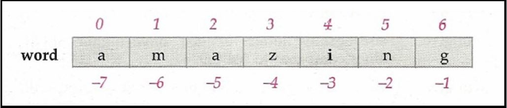
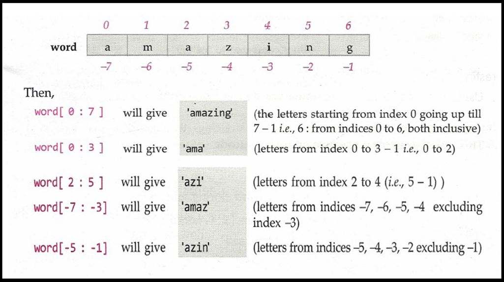
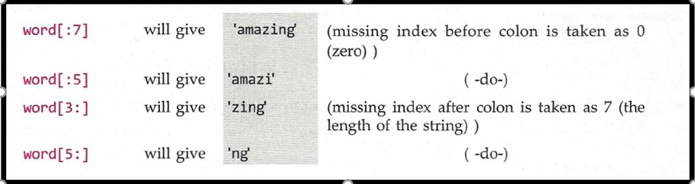
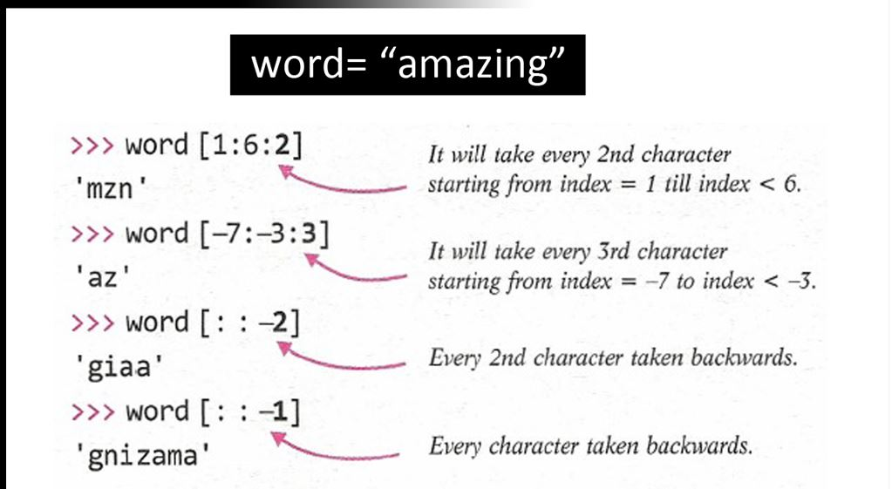

String Slicing And Other Functions In Python
Strings
String is a data type in Python. Strings in Python programming language are arrays of bytes representing a sequence of characters. In simple terms, Strings are the combination
or collection of characters enclosed in quotes.
Primarily, you will find 3 types of strings in Python:
• Single Quote String – (‘Single Quote String’)
• Double Quote String – (“Double Quote String”)
• Triple Quote String – (‘’’ Triple Quote String ‘’’)
Let us now look into some functions you will use to manipulate or perform operations on strings.
len() Function : This len() function returns the total no. of characters in a string. E.g. for string a="abc", len(a) will return 3 as the output as it is a string
variable containing 3 characters
Strings are one of the most used data types in any programming language because most of the real-world data such as name, address, or any sequence which contains alphanumeric
characters are mostly of type ‘String’.
E.g. Consider this string variable x
x = "String Demo"
This string variable x contains a string containing 11 characters (including spaces). Since the index in a string starts from 0 to length-1, this string can be looked at as:

Note: The indexes of a string begin from 0 to (length-1) in the forward direction and -1,-2,-3,…, -length in the backward direction.
String Slicing:
As we know the meaning of the word ‘slice’ is ‘a part of’. I am sure you have sliced paneer cubes at home!
Just like paneer slice refers to the part of the paneer cube; In Python, the term ‘string slice’ refers to a part of the string, where strings are sliced using a range
of indices. To do string slicing we just need to put the name of the string followed by [n:m]. It means ‘n’ denotes the index from which slicing should start and ‘m’ denotes
the index at which slicing should terminate or complete. Let's look into an example!

In Python, string slicing s[n:m] for a string s is done as characters of s from n to m-1. It means characters are taken from the first index to second index-1.
For E.g. abc="Demo" then abc[0:3] will give ‘Dem’ and will not give ‘Demo’ coz index number of ‘D’ is 0, ‘e’ is 1, ‘m’ is 2, and ‘o’ is 3. So, it will give a range from n to
m-1 i.e. 0 to 3-1=2. That’s why we got output ‘Dem’.

In string slicing, we sometimes need to give a skip value i.e. string[n:m:skip_value]. This simply takes every skip_valueth character. By default, the skip value is 1 but if
we want to choose alternate characters of a string then we can give it as 2. Have a look at the example below:

Let's end this tutorial by looking into some of the most used string functions:
• string.endswith(): This function allows the user to check whether a given string ends with passed argument or not. It returns True or False.
• string.count(): This function counts the total no. of occurrence of any character in the string. It takes the character whose occurrence you want to find as an
argument.
• string.capitalize(): This function capitalizes the first character of any string. It doesn’t take any argument.
• string.upper(): It returns the copy of the string converted to the uppercase.
• string.lower(): It returns the copy of the string converted to lower case.
• string.find(): This function finds any given character or word in the entire string. It returns the index of first character from that word.
• string.replace(“old_word”, “new_word”): This function replaces the old word or character with a new word or character in the entire string.
#String Functions :
demo = " Aakash is a good boy"
print(demo.endswith("boy"))
print(demo.count('o'))
print(demo.capitalize())
print(demo.upper())
print(demo.lower())
print(demo.find("is"))
print(demo.replace("good","nice"))
Program
mystr = "Mohan is a good boy"
# print(len(mystr))
# print(mystr[::-2])
print(mystr.endswith("bdoy"))
print(mystr.count("o"))
print(mystr.capitalize())
print(mystr.replace("is", "are"))